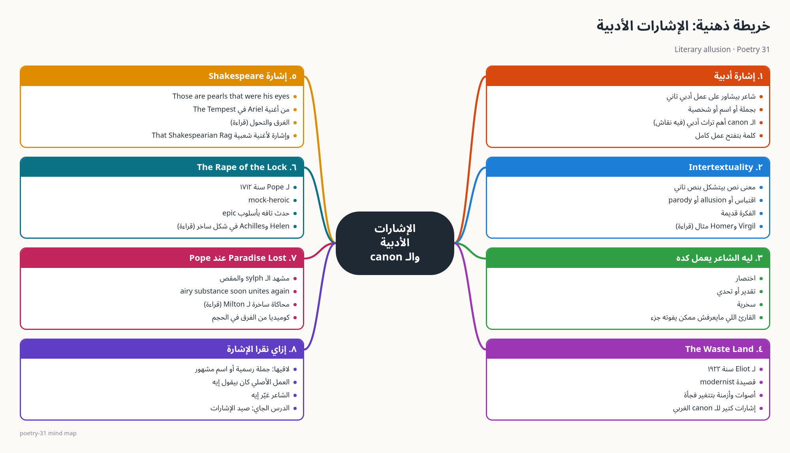

آداب الإنجليزية
: قواعد وجرامر وشعر وأساطير
⭐
0
🔥
استمر!
📚
الدرس ٣١: الإشارات الأدبية، Shakespeare وMilton والـ canon جوه قصايد لاحقة
📊
المستوى: C1
الدرس 31 من 31
📖
كورس الشعر
📄 حمّل PDF الدرس
📝 ملخص الدرس (عربي) PDF
📝 Lesson Summary (English) PDF
🧠 الخريطة الذهنية PDF
🧠 شوف الخريطة الذهنية للدرس

→
الدرس اللي قبله
كل دروس الكورس
الدرس اللي بعده
←